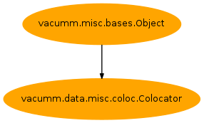

2.7.2.1.2. Content¶
| Inheritance diagram: | |
|---|---|

Dataset Colocalizations
-
class
Colocator(**kwargs)[source]¶ Bases:
vacumm.misc.bases.Object-
coloc_mod_on_pro(model, profiles, varnames, select=None, method='nearest')[source]¶ Colocalize model on profile data.
Load model data corresponding to the selected profiles positions and time.
Returns loaded model longitudes, latitudes, depths and requested variable(s)
Params: - model: model data
Dataset - profiles: profile data
ProfilesDataset - varnames: variables to load (ex: (‘temp’,’sal’) or ((‘temp’,’temperature’),(‘sal’,’salinity’))
- select: selector
- method: coloc method (nearest or interp)
Return: - lons_mod: model longitude coordinates, shape: (profile)
- lats_mod: model latitude coordinates, shape: (profile)
- deps_mod: model depth coordinates, shape: (level,profile)
- var1: requested variables, shape: (level,profile)
- …
- varN
Todo
- also load and return profile data here
- exclude coords where profile data is masked (no data for specified depth)
- return time coordinates
- return depth and vars with shape (profile,level)
- model: model data
-
coloc_strat_mod_on_pro(model, profiles, select, **kwargs)[source]¶ Get colocalized stratification data of a model on profiles
See:
coloc_mod_on_pro()Return: - lons_mod, lats_mod, deps_mod:
- temp_mod, sal_mod: temperature and salinity
- pres_mod, dens_mod: pressure and density
-
critical= <bound class method Colocator.wrapper>¶
-
debug= <bound class method Colocator.wrapper>¶
-
error= <bound class method Colocator.wrapper>¶
-
exception= <bound class method Colocator.wrapper>¶
-
get_loglevel= <bound class method Colocator.wrapper>¶
-
info= <bound class method Colocator.wrapper>¶
-
is_debug= <bound class method Colocator.wrapper>¶
-
is_verbose= <bound class method Colocator.wrapper>¶
-
notice= <bound class method Colocator.wrapper>¶
-
notset= <bound class method Colocator.wrapper>¶
-
plot_layer_mod_on_pro(model, profiles, varname, depth, select=None, **kwargs)[source]¶ Get a layer of variable for a specified depth.
Params: - varname: variable to process
- depth: output depth(s)
Other params, see:
coloc_mod_on_pro()
-
plot_mld_mod_on_pro(model, profiles, select=None, deep=False, **kwargs)[source]¶ Plot mixed layer depth of model data correspponding to profiles position
Params: - deep: deep water computation mode if true
Other params, see:
coloc_mod_on_pro()
-
plot_ped_mod_on_pro(model, profiles, select=None, **kwargs)[source]¶ Plot potential energy deficit of model data correspponding to profiles position
Params: See: coloc_mod_on_pro()
-
set_loglevel= <bound class method Colocator.wrapper>¶
-
verbose= <bound class method Colocator.wrapper>¶
-
warning= <bound class method Colocator.wrapper>¶
-